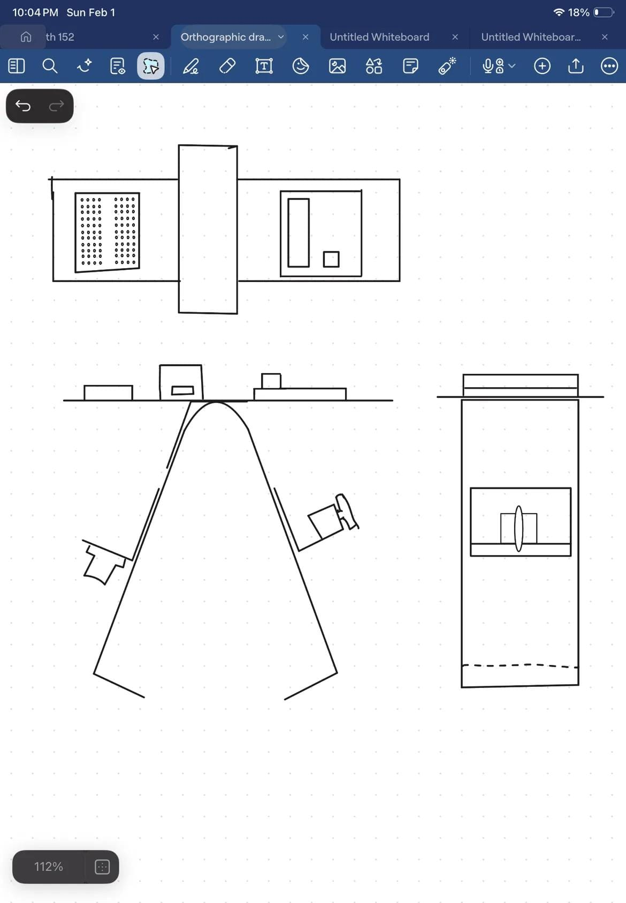
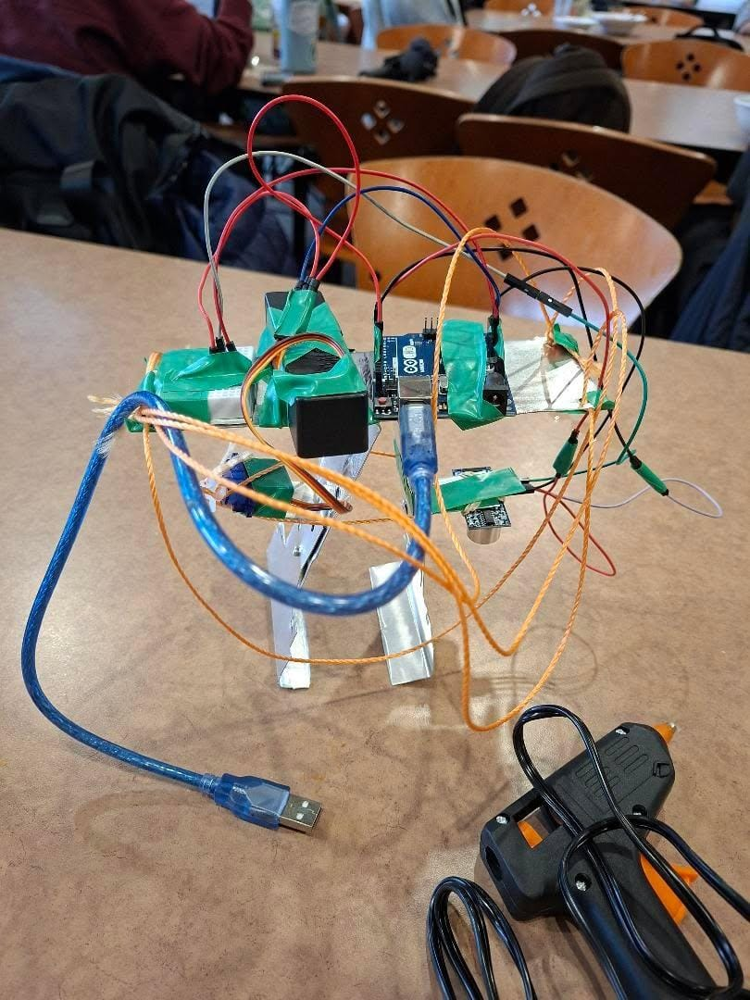

Robotic Retrieval System | Arduino Coding
Mechanism Design: Me and my team implemented a dual-pull mechanism to generate a balanced opposing force, effectively compensating for the servo motor's limited torque. This core solution was further enhanced by integrating an excavator-inspired scooping design to significantly boost grip performance.
Operational Constraints: The device's lifting capacity is strictly confined by the gripper's physical geometry. Only objects smaller than the jaw gap can be successfully engaged and lifted. The main challenge was the servo motor's limited power, which was insufficient for closing the gripper gap. To address this, a mechanical redesign was essential.
My primary focus on this project was the Arduino hardware integration. I developed the logic to translate sensor data into precise physical movement.

